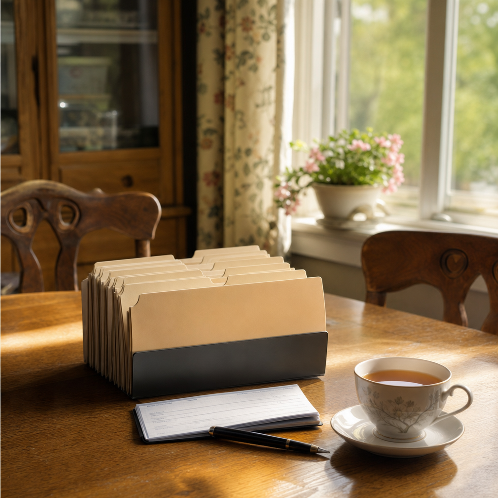

When the mail has become a pile.
Kathy Rusmisel pays the bills, sorts the paperwork and sits with the lawyer and the accountant for people in Bridgewater and Rockingham County who cannot keep up with it, or would rather not. She comes to the house, once a month or as often as it takes.
Call Kathy
or write to kathy@vistadmm.com